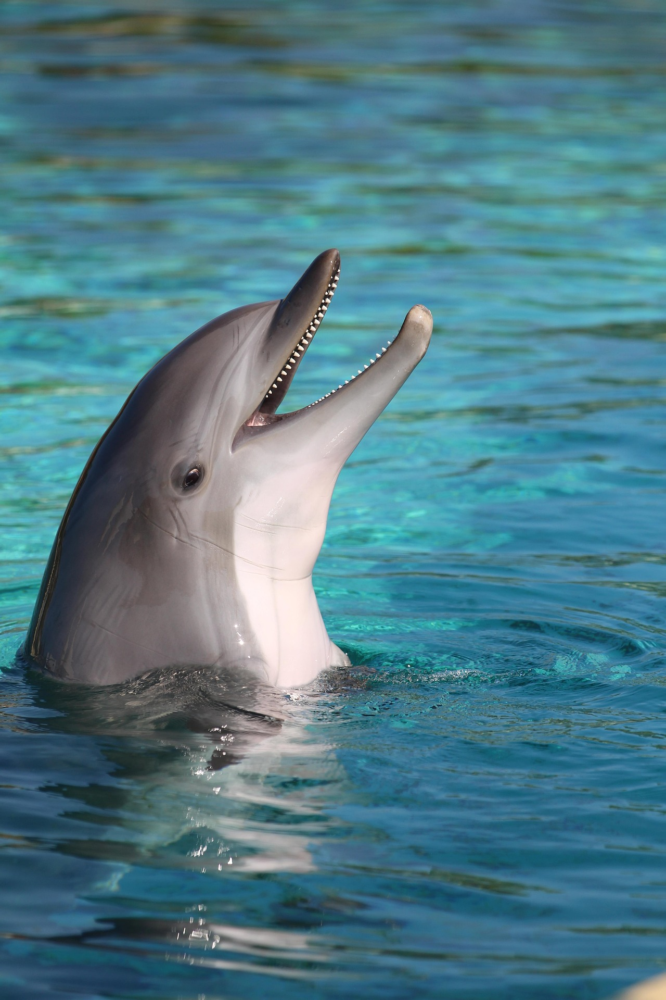
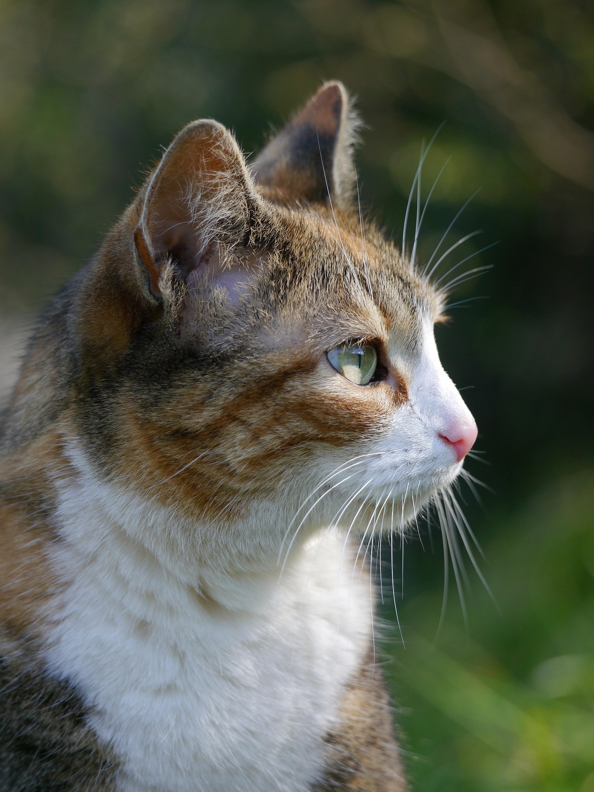
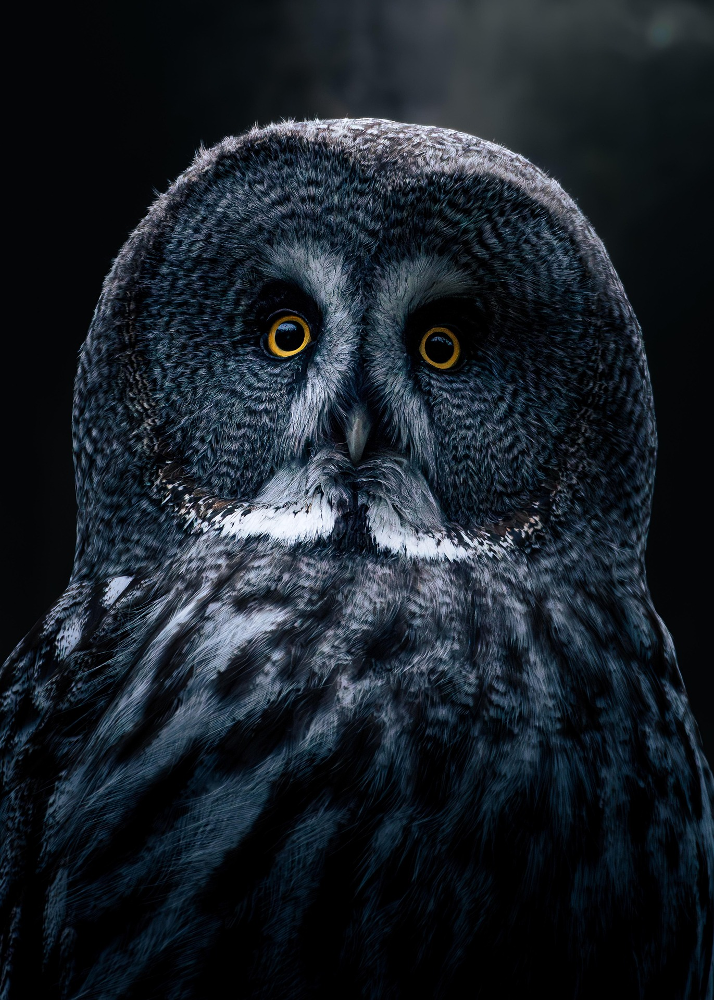
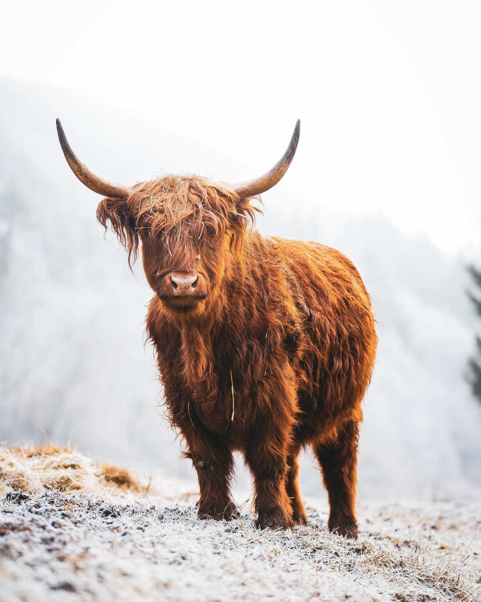
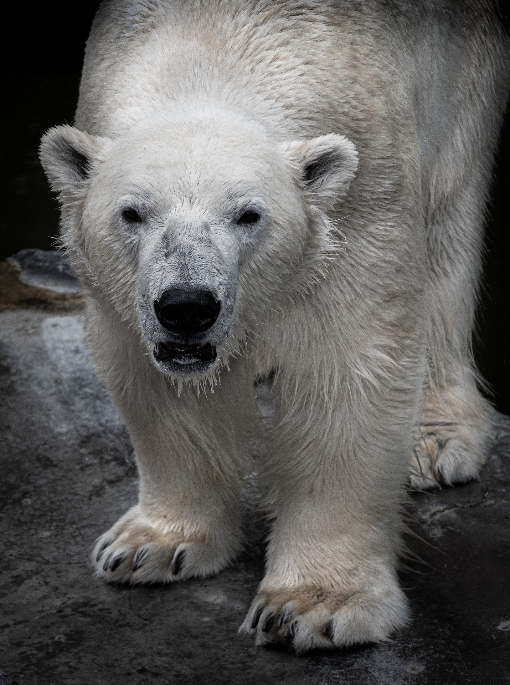
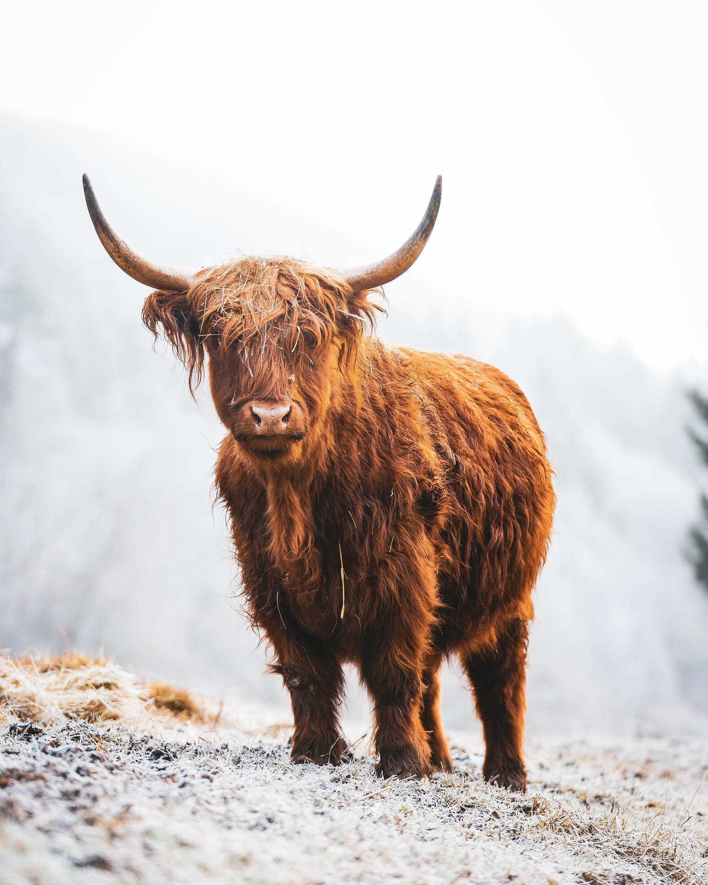
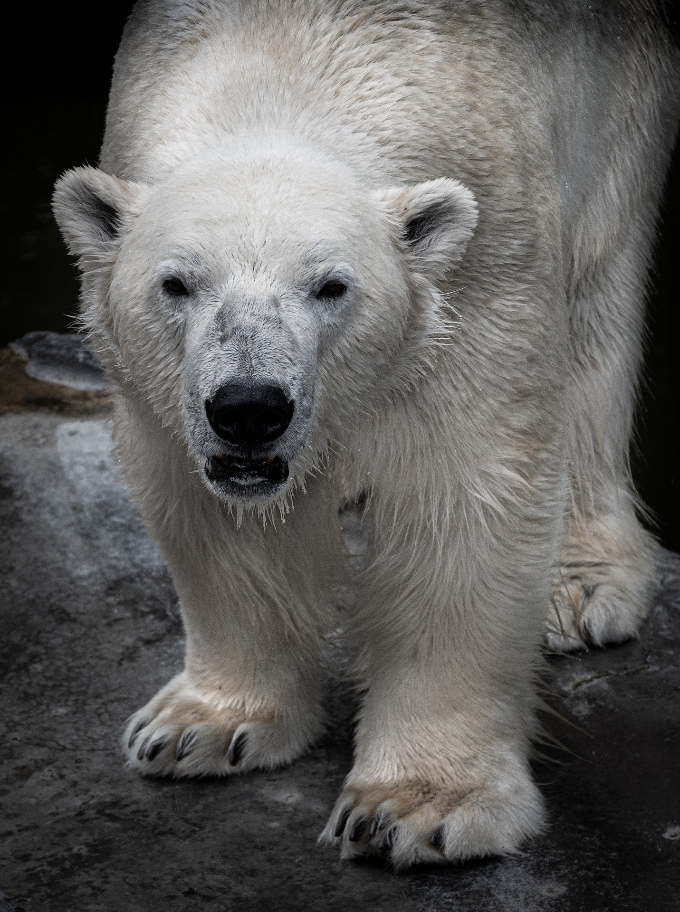
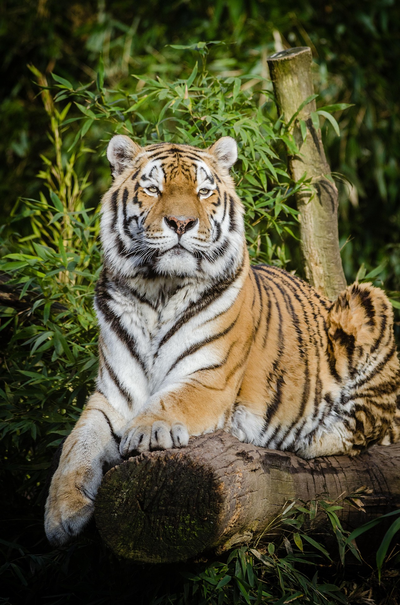
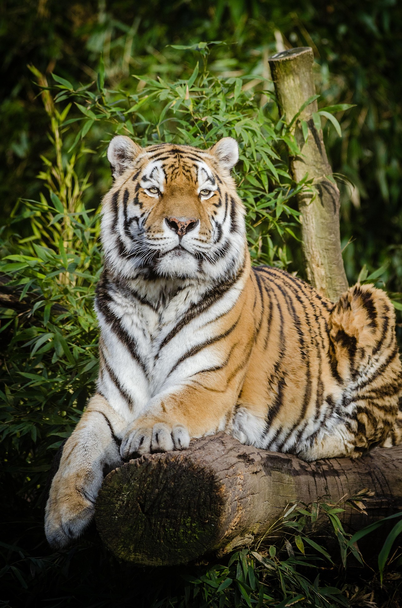

박정현/ 남
OREUMI10@.com
HELLO!
I'm someone who dreams of becoming a developer. Right now, I'm learning Java, CSS, and HTML to build a strong foundation in web development. I'm excited to continue growing my skills and work on creating amazing projects in the future.
박정현/ 남
OREUMI10@.com
#INTP #낚시 #영화감상
#피자 #스파게티
좌우명
전공
프로젝트경험
희망분야
기술
자격증
경력사항
계획
목표
OREUMI 동물사전에 오신 것을 환영합니다!
   



 

돌고래 [Dolphin]
먹이 - 작은 군집성 어류 및 오징어
서식지 - 연안의 얕은 곳이나 외양 또는 강
크기 - 몸길이 4.5m 이하
학명 - Delphinus delphis(Linneaus, 1758)
분류 - 참돌고래과, 강돌고래상과, 쇠돌고래과
분포 - 태평양·대서양·인도양·아마존강·갠지스강·양쯔강 등
고양이 [Cat]
먹이 - 쥐, 작은 조류, 개구리
크기 - 30~60cm
무게 - 2~8.5kg
학명 - Felis catus
분류 - 고양이과
멸종위기등급 - 미평가(NE : Not Evaluated, 출처 : IUCN)
올빼미 [Owl]
먹이 - 들쥐, 작은 새, 곤충
크기 - 약 38cm
수명 - 18~27년
서식지 - 평지 또는 산지 숲
학명 - Strix aluco
무게 - 410~800g
여우 [Fox]
서식지 산림지대, 숲, 초원, 사막
학명 Vulpes vulpes peculiosa(Kishida, 1924)
크기 몸길이 60~90cm, 어깨높이 약 35cm, 꼬리길이 34~60cm
분류 문 : 척삭동물문(Chordata) 강 : 포유강(Mammalia) 목 : 식육목(Carnivora)
무게 5~10kg
멸종위기등급 미평가(NE : Not Evaluated, 출처 : IUCN)
소 [Cattle]
수명 - 약 20년
먹이 - 초식성(건초, 나뭇잎, 풀, 도토리)
무게 - 450~1000kg
분류 - 계 : 동물계(Animalia) 문 : 척삭동물문(Chordata)
크기 - 310cm
학명 - Bos taurus
활동시간 - 낮
분포 - 분포지 : 한국, 미국, 유럽, 호주
북극곰 [Polar bear]
먹이 - 육식성(고리무늬 물범 등)
크기 - 몸길이 2~3m, 꼬리길이 7.6~13cm, 어깨높이 약 160cm
수명 - 25~30년
무게 - 150~650 kg
멸종위기등급 - 취약(VU : Vulnerable, 출처 : IUCN)
학명 - Ursus maritimus
플라밍고 [Flamingo]
크기 - 키 약 1.2m, 몸길이 0.8~1.3m
무게 - 2.5~3kg
몸의 - 빛깔 분홍색
생식 - 난생(1회에 1개)
생활양식 - 무리 생활
서식장소 - 물가
양 [Sheep]
먹이 - 초식성(풀잎, 사초식물, 활엽초본, 새싹)
수명 - 10~20년
무게 - 20~200kg
학명 - Ovis aries
크기 - 1.2~1.8m
서식지 - 고원지대, 경사가 있는 산지, 울통불퉁한 언덕, 바위언덕
고릴라 [Gorilla]
수명 - 40~50년
크기 - 몸길이 수컷 170~185cm, 암컷 150cm
먹이 - 초식성
서식지 - 열대우림
무게 - 수컷 135~275kg, 암컷 70~90kg
학명 - Gorilla
코끼리 [Elephant]
수명 - 60~70년
서식지 - 산림이나 사바나
분류 - 코끼리과
생활양식 - 성숙한 암컷이 이끄는 가족단위가 다른 가족단위와 결합
생식 - 임신기간 21~22개월, 1회에 1마리 낳음
독수리 [Eagle]
먹이 - 동물의 사체
크기 - 98~120cm
무게 - 6.8~14kg
학명 - Aegypius monachus(LINNAEUS)
멸종위기등급 - 준위협(NT : Near Threatened, 출처 : IUCN)
분류 - 수리과
호랑이 [Tiger]
수명 - 야생 15년, 사육 20년
크기 - 몸길이 1.86m~4m
서식지 - 산림·관목림·덤불
먹이 - 육식성(대형 포유동물, 소형 포유동물, 조류)
학명 - Panthera tigris
활동시간 - 밤